14
Financial Reporting Modules
Independently developed two end to end Power BI solutions at VS Information Systems, comprising 14 interactive financial reporting modules and analysing LKR 801.97 million in reported revenue.
I'm Tricia De Rose, a Monash University Bachelor of Commerce graduate, majoring in Data Analytics with minors in Finance and Economics. My expertise brings together business intelligence, machine learning, accounting, financial analysis and strategic consulting to solve complex business challenges. Through developing predictive models, analysing financial performance and investigating market trends, I have learnt to look beyond numbers and uncover the insights that matter. I am driven by curiosity, analytical thinking and a commitment to turning complex data into meaningful insights that support smarter business decisions.
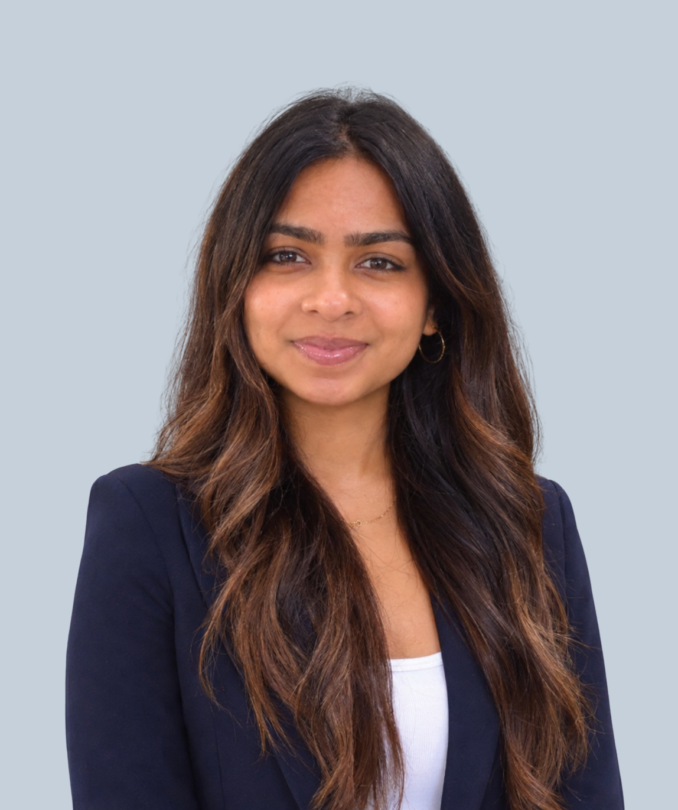
Independently developed two end to end Power BI solutions at VS Information Systems, comprising 14 interactive financial reporting modules and analysing LKR 801.97 million in reported revenue.
Validated LKR 427.19 million in outstanding receivables across 189 invoices, applying financial data analysis to examine customer balances, payment activity and reporting accuracy.
Contributed to a Sofitel Melbourne consulting project evaluating A$25.8 million in procurement expenditure across approximately 390 suppliers, identifying governance weaknesses and supply chain risks.
Conducted exploratory data analysis of over 2.54 million wholesale electricity price observations across five Australian regions from 2022 to 2026, investigating pricing trends and market volatility.
Represented Sri Lanka on the National Swimming Team from 2021 to 2024, establishing four national records and winning multiple championship titles throughout a 14 year swimming career.
Turning Data into Insight and Insight into Decisions
My portfolio brings together ten projects across business intelligence, financial analysis, machine learning, data visualisation and strategic consulting. Through professional experience, university studies and independent research, I have applied analytical methods to investigate business problems, develop interactive dashboards, evaluate financial performance and communicate meaningful findings.
Each project reflects a different aspect of my analytical capabilities, from preparing and modelling data to identifying patterns, evaluating risks and supporting informed decision making.
Select Project Details for an overview, or View Project to open the full interactive case study in a new tab.
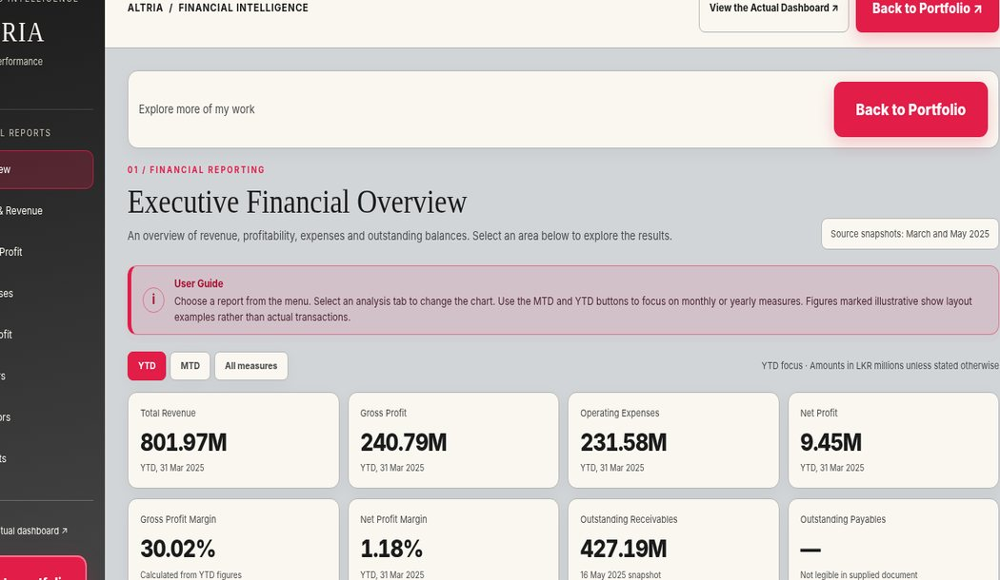
01 / 10Developed an interactive Power BI solution to analyse revenue, profitability, expenses and project performance, supporting financial reporting and business decision making.
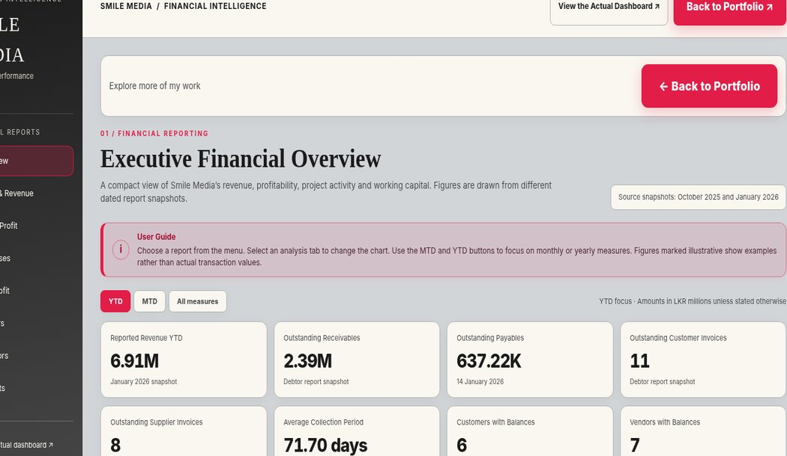
02 / 10Developed interactive financial dashboards to evaluate project profitability, revenue performance, customer balances and outstanding receivables.
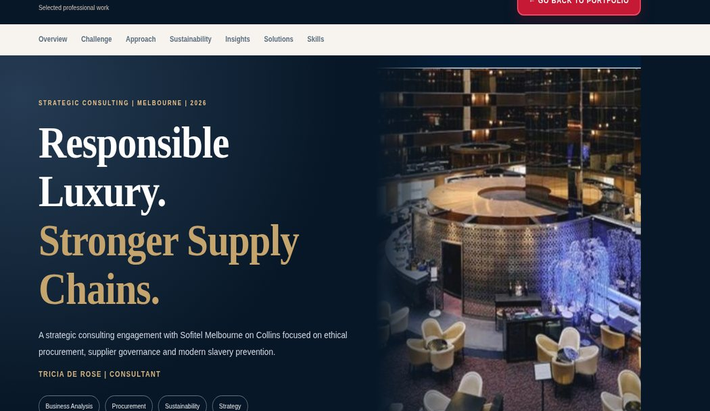
03 / 10Analysed A$25.8 million in procurement expenditure across approximately 390 suppliers, identifying governance weaknesses and recommending improvements to supplier risk management.
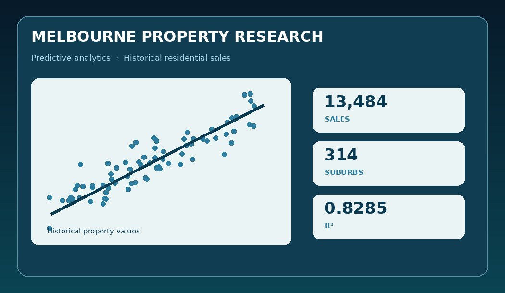
04 / 10Analysed 13,484 residential transactions across 314 suburbs, achieving a strongest reported exploratory R² of 0.8285.
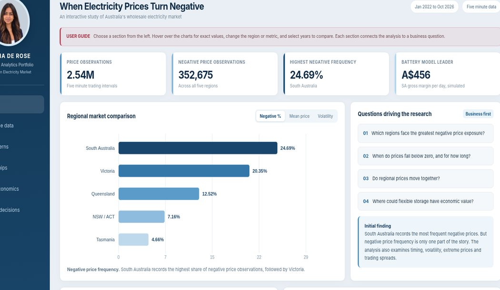
05 / 10Analysed over 2.54 million electricity price observations across five Australian regions, investigating pricing trends, regional differences and market volatility.
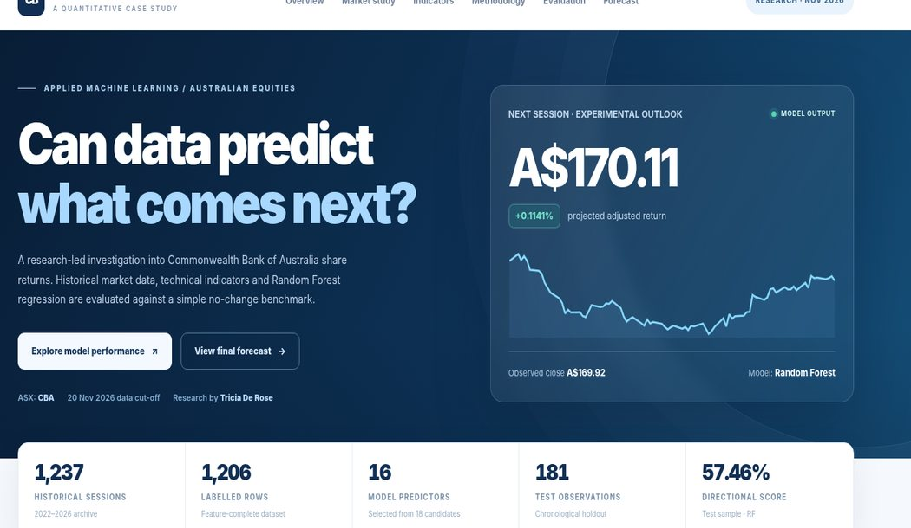
06 / 10Applied machine learning and historical financial data to investigate Commonwealth Bank share price movements, predictive patterns and investment risk.
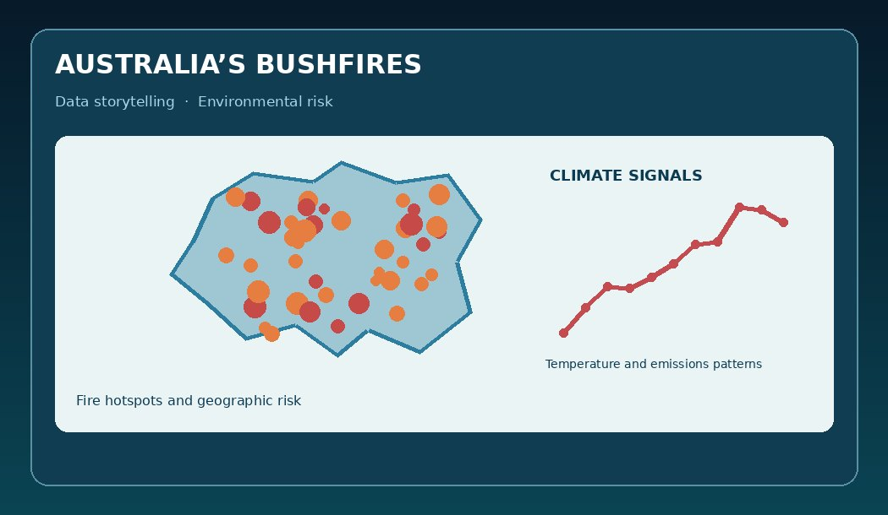
07 / 10Developed an interactive data visualisation website exploring Australian bushfire patterns, climate trends, environmental impacts and geographic risks.
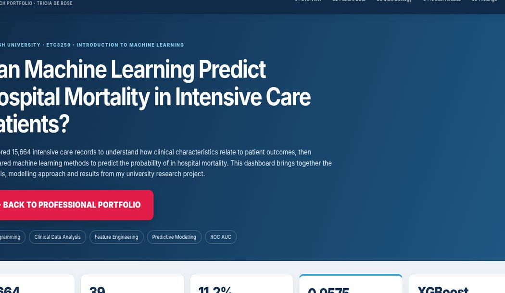
08 / 10Developed hospital mortality prediction models using 15,664 patient records, achieving a validation ROC AUC of 0.9575 with XGBoost.
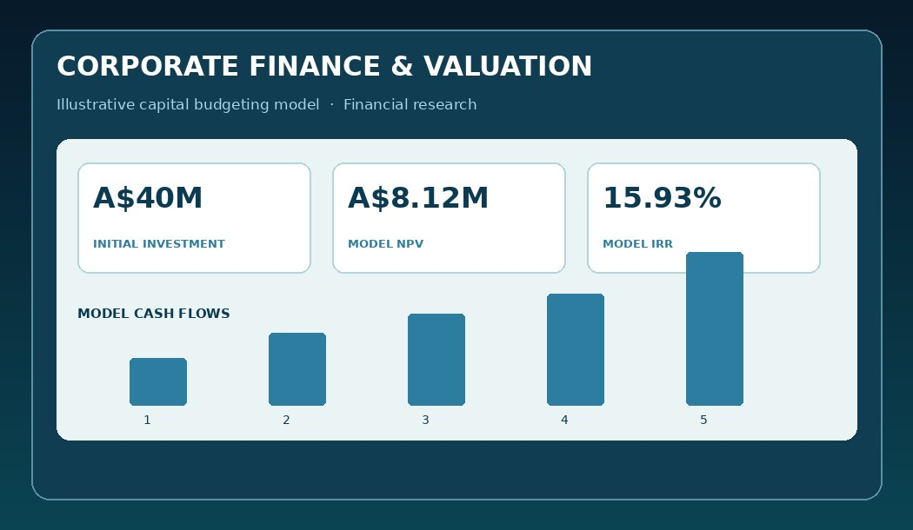
09 / 10Evaluated a hypothetical A$40 million investment using NPV, IRR, WACC and sensitivity analysis to assess financial feasibility and investment risk.
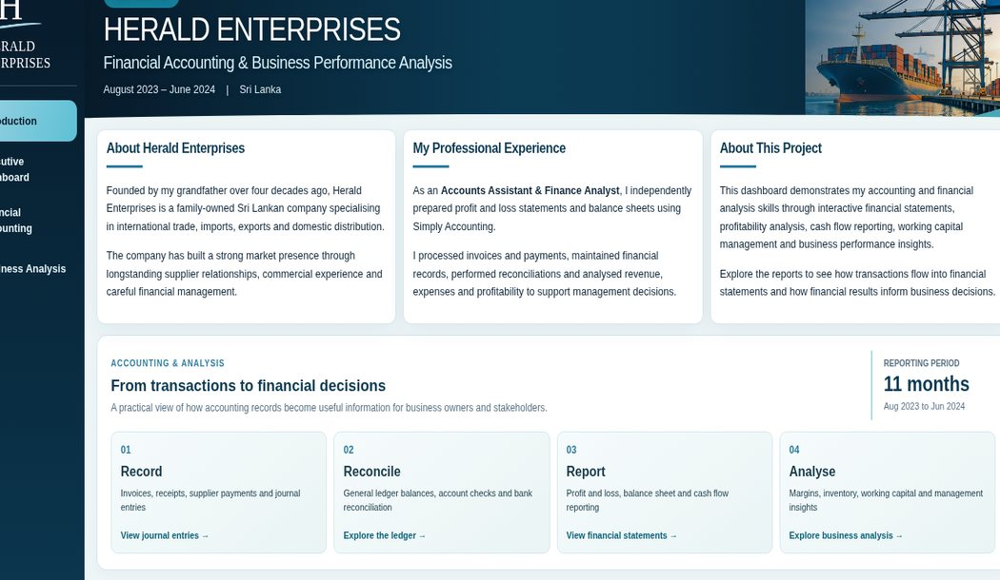
10 / 10Prepared financial statements, reconciled accounts and analysed revenue, expenses and profitability using Simply Accounting to support financial reporting.
What I achieved, what I learnt and how I contributed.
My professional experience spans data analytics, financial accounting, business consulting and operations. These roles have strengthened my understanding of how analysis, financial information and effective business processes support practical decisions.
Select an organisation below to view my achievements, learning outcomes and related project links. Open Read remaining achievements for the complete record.
At VS Information Systems, I independently developed two end to end Power BI financial reporting solutions for Altria and Smile Media. My work covered data preparation, financial modelling, DAX calculations and interactive dashboard development, helping transform financial records into structured reporting tools.
This internship strengthened my ability to manage the complete business intelligence development process, from understanding financial reporting requirements and preparing raw datasets to developing interactive dashboards.
I learnt how to construct financial measures, validate large transaction datasets and present financial information in ways that support management reporting. Working with different business reporting requirements also improved my analytical judgement, attention to detail and understanding of how dashboard design influences the interpretation of financial performance.
At Herald Enterprises, I developed practical experience in financial accounting and business performance analysis. My responsibilities involved preparing financial statements, reconciling accounts, monitoring transactions and interpreting financial information to support management reporting.
This experience taught me how accounting transactions flow into general ledgers and financial statements, and how financial reporting supports business decisions.
I developed practical knowledge of account reconciliation, transaction processing, receivables, payables and financial statement preparation. I also learnt to recognise the relationship between revenue, expenses, profitability and working capital.
Most importantly, I understood that accurate accounting records form the foundation for meaningful financial analysis.
Analysed procurement practices, supplier risks and ESG compliance, with a focus on modern slavery exposure across hotel operations. Evaluated supplier screening processes, governance structures and supply chain transparency to identify gaps in verification, accountability and risk management.
This project taught me how to approach complex organisational problems using both quantitative evidence and structured business analysis.
I developed practical understanding of procurement risk assessment, supplier governance, root cause analysis and stakeholder considerations. I also learnt how to distinguish symptoms from underlying organisational weaknesses and develop recommendations that are realistic, measurable and aligned with business priorities.
The experience strengthened my ability to connect analytical findings with strategic decision making, particularly where financial, operational and ethical considerations overlap.
At Tele Energy, I supported administrative and operational processes within the renewable energy industry, working with customer enquiries, financial documentation, business transactions and installation coordination.

This experience improved my understanding of how administrative systems, accurate records and communication contribute to operational efficiency.
Handling a high volume of customer enquiries strengthened my ability to prioritise tasks, organise information and manage competing responsibilities. I also developed a clearer understanding of how quotations, purchasing documents, invoices and installation schedules connect within a business workflow.
The role taught me the importance of accuracy, responsiveness and effective coordination in supporting customer service and daily operations.
Combining Technical Knowledge with Financial and Business Understanding
My technical expertise has developed through my Bachelor of Commerce at Monash University, professional experience and independent research. I have applied programming, statistical modelling, business intelligence, financial analysis and economic reasoning to investigate complex datasets, evaluate business performance and develop analytical solutions.
My capabilities extend beyond individual software tools. I understand how to prepare and validate data, select appropriate analytical methods, interpret results and communicate findings in ways that support informed business decisions.
Select one of the six technical areas to explore the methods I applied, the work I completed and the evidence behind each skill.
Tools: Power BI, DAX, Power Query, Tableau, Advanced Excel, HTML, CSS, JavaScript
Developed practical business intelligence capabilities through the creation of interactive financial dashboards and analytical reporting solutions. My work includes developing data models, creating DAX measures, transforming datasets, designing KPI reporting systems and presenting complex numerical information through accessible visualisations.
Demonstrated Through: Altria, Smile Media, Australian Bushfires and financial reporting projects.
Tools: Python, R, SQL (Oracle), MongoDB, Java, C++, Excel, RStudio
Developed programming and quantitative analysis skills through university coursework, statistical research and independent analytical projects. I have worked with structured datasets, investigated relationships between variables and applied statistical techniques to evaluate patterns, uncertainty and business questions.
Demonstrated Through: Australian Electricity Market, Melbourne Property Analysis, Marketing Research and High Dimensional Data Analysis.
Methods: XGBoost, Random Forest, Logistic Regression, Gradient Boosting, Classification, Regression, Feature Engineering
Developed machine learning capabilities through supervised learning projects involving healthcare, property markets, financial assets and competitive swimming. My research focuses on preparing datasets, developing predictive features, comparing algorithms and evaluating how accurately models perform on unseen observations.
Demonstrated Through: Healthcare Machine Learning, Melbourne Property Analysis, Commonwealth Bank Equity Prediction and Swimming Performance Research.
Tools & Methods: Simply Accounting, MYOB, Advanced Excel, Financial Statements, NPV, IRR, WACC, Financial Modelling
Developed financial accounting and corporate finance expertise through professional responsibilities, academic studies and independent financial simulations. I have worked with financial records, prepared accounting statements, evaluated profitability and applied investment appraisal techniques to understand financial performance and risk.
Demonstrated Through: Herald Enterprises, Corporate Finance Investment Analysis and Accounting Simulation.
Methods: Economic Modelling, Regression, Market Analysis, Statistical Inference, Consumer Research, Financial Economics
My economics and quantitative research background supports my ability to interpret business decisions within wider market conditions. Through academic research, I have examined consumer behaviour, market competition, economic growth, pricing strategies, financial risk and the statistical relationships underlying economic outcomes.
Demonstrated Through: Economics Research, Marketing Research Analysis, Statistical Thinking and Financial Risk Modelling.
Methods: Gap Analysis, Root Cause Analysis, Risk Assessment, Stakeholder Communication, Process Evaluation, Strategic Recommendations
Developed business analysis and consulting capabilities through an industry consulting engagement, professional responsibilities and academic case studies. My experience has strengthened my ability to investigate business challenges, interpret operational information and develop evidence based recommendations.
Demonstrated Through: Sofitel Melbourne Consulting, VS Information Systems, Herald Enterprises and Tele Energy.
I am a Bachelor of Commerce graduate from Monash University, majoring in Business Analytics, with academic studies in Finance and Economics. Originally from Sri Lanka, I moved to Melbourne to pursue my university education and explore my interests in data, financial analysis and business decision making.
My academic and professional journey has allowed me to develop knowledge across several disciplines, from programming and machine learning to financial accounting, economics and strategic consulting.
Beyond academics, I spent 14 years as a competitive swimmer, representing Sri Lanka internationally and learning the value of discipline, resilience and perseverance. These experiences have shaped how I approach challenges, pursue new interests and continue developing both personally and professionally.
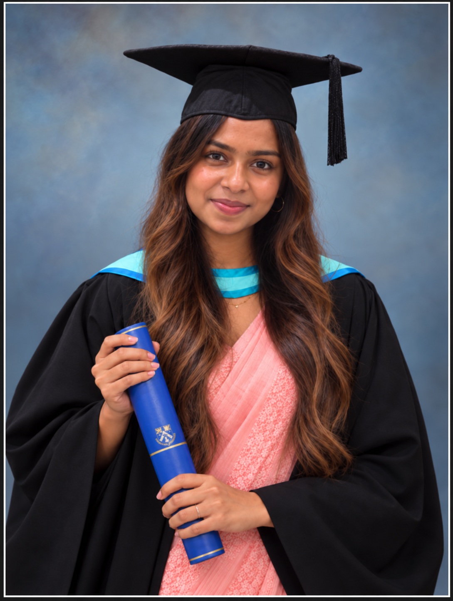
I chose to study Commerce because I wanted to understand how businesses operate, how financial decisions shape their success and how data can support better decision making.
Throughout my Bachelor of Commerce at Monash University, I developed a strong interest in Business Analytics, Finance, Economics and Accounting.
Business Analytics introduced me to programming, statistical modelling, machine learning and data visualisation, teaching me how to transform complex information into meaningful insights.
Economics strengthened my understanding of consumer behaviour, market competition, pricing strategies, inflation, monetary policy and economic growth, helping me understand how businesses operate within the wider economy.
Finance developed my knowledge of investment valuation, financial markets, corporate finance and risk management, while Accounting taught me how financial reporting, reconciliations and profitability analysis reveal a business's financial position.
What interests me most is how these disciplines connect. Data reveals patterns, Economics explains market behaviour, Finance evaluates decisions and Accounting measures financial performance.
I aspire to build a career where I can combine these skills to solve business challenges and contribute to informed financial and strategic decisions.
Bachelor of Commerce
Data Analytics: Machine Learning, High Dimensional Data Analysis, Statistical Analysis, Databases (SQL), Data Visualisation, Programming (Python), Marketing Research Analysis
Finance: Corporate Finance, Derivatives, Debt Markets and Fixed Income Securities, International Finance
Economics: Microeconomics, Macroeconomics, Sports Economics, Economic Growth
Diploma of Business and Commerce
Coursework: Mathematics, Statistics, Accounting, Finance, Economics and Law
Fourteen years in the pool. A lifetime of lessons.
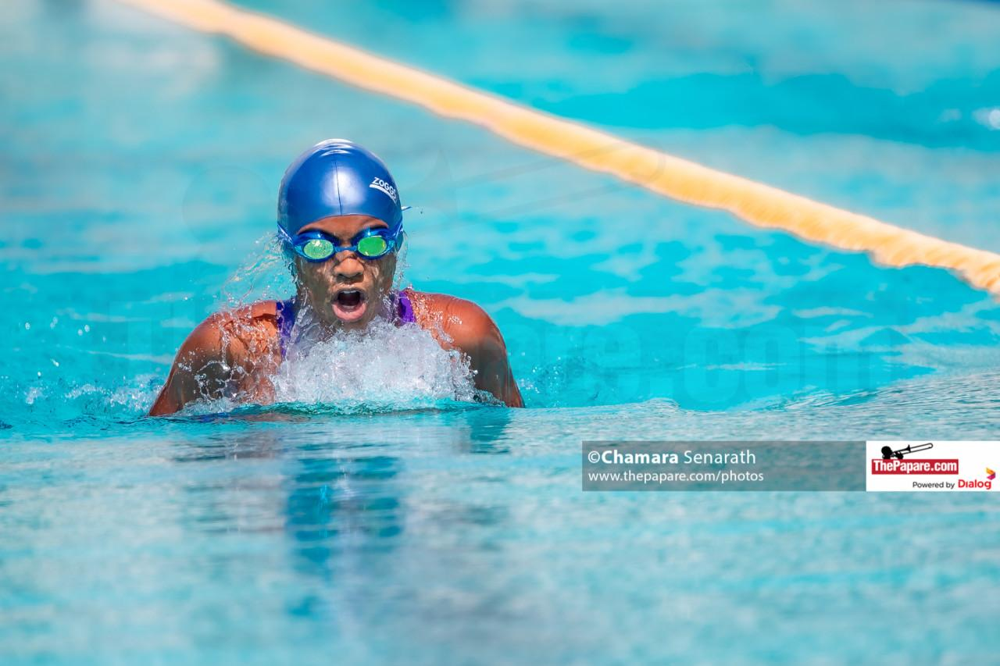

Swimming has been one of the most important parts of my life. I dedicated 14 years to the sport, including eight years of elite competitive swimming, with the privilege of representing Sri Lanka at national and international competitions.
From 2021 to 2024, I was a member of the Sri Lankan National Swimming Team, competing internationally and establishing four national records.
Throughout my swimming career, I won multiple championship titles, including the 2022 National 200m Butterfly Championship, the 2023 Under 20 Schools Championship and the 2023 Pentathlon Championship.
My main competitive events were the 400m Individual Medley, 200m Backstroke and 200m Butterfly.
Swimming taught me the importance of consistency, discipline and working towards goals that require years of commitment.
Balancing demanding training schedules, competitions and academic responsibilities strengthened my time management, determination and ability to remain focused under pressure.
It also taught me that progress is rarely immediate. Improvement requires patience, reflection and the willingness to continue learning from setbacks.
Moving to Australia to study at Monash University marked the beginning of a new chapter. As I stepped away from competitive swimming, I began exploring my academic interests in data analytics, economics and financial analysis.
Although my competitive swimming career came to an end, my connection to the sport remained strong.
My independent swimming performance research allowed me to combine my sporting background with machine learning, using historical competition results and predictive modelling to investigate race times and potential championship outcomes.
Swimming will always remain an important part of who I am. The dedication, resilience and determination I developed through the sport continue to influence how I approach my education, professional ambitions and personal development.
Explore the photographs from my swimming journey. Select a photograph to see it in full size, or open the swimming research project.


My passion for swimming remains part of my research today, connecting sporting experience with predictive analytics and machine learning.
Explore My Swimming Research ↗